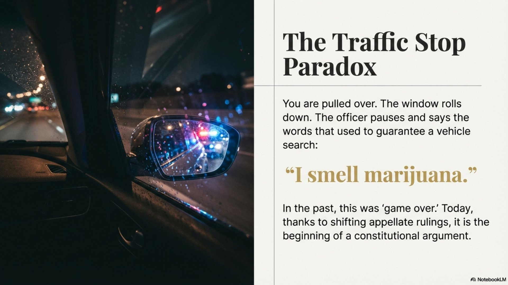

Can Police Search Your Car Just Because They Smell Marijuana? Florida Courts Disagree

You're pulled over for a routine traffic violation. The officer approaches your window, pauses, and says the words that make every driver's heart sink: "I smell marijuana." In the past, that statement was a guaranteed vehicle search. But a groundbreaking 2024 ruling from Florida's 5th District Court of Appeal may have changed everything - at least if you're in Central Florida.
The Problem: Florida's Medical Marijuana Reality
When Florida voters passed Amendment 2 in 2016, they didn't just legalize medical marijuana - they created a constitutional right for qualified patients to possess cannabis. Today, over 800,000 Floridians hold valid medical marijuana cards.
This creates a fundamental legal question: If marijuana possession is now legal for hundreds of thousands of people, does the odor of cannabis still automatically indicate criminal activity? Or is it now just as innocuous as the smell of alcohol - legal for most people, illegal only in certain circumstances?
The Core Issue
The 4th Amendment protects you from unreasonable searches. Police need either a warrant or probable cause - a fair probability that they'll find evidence of a crime. If marijuana odor is equally consistent with legal activity (medical use) and illegal activity (recreational possession), does it still provide probable cause?
The DCA Split: Florida Courts Disagree
Florida's District Courts of Appeal are currently split on this question. Most have ruled that marijuana odor still provides reasonable suspicion and probable cause for a search. But in 2024, the 5th DCA broke from the pack with a ruling that could suppress evidence in countless Central Florida cases.
| Court | Ruling | Case | Year |
|---|---|---|---|
| 1st DCA | Odor = RS/PC | Johnson v. State, 275 So. 3d 800 | 2019 |
| 2nd DCA | Odor = RS/PC | Owens v. State, 317 So. 3d 1218 | 2021 |
| 3rd DCA | No ruling yet | — | — |
| 4th DCA | Odor = RS/PC | State v. Fortin, 49 Fla. L. Weekly D632a | 2024 |
| 5th DCA | Odor ≠ RS/PC | Baxter v. State, 49 Fla. L. Weekly D1643a | 2024 |
| 6th DCA | No ruling yet | — | — |
The Baxter Breakthrough: What the 5th DCA Said
In Baxter v. State (2024), the 5th District Court of Appeal ruled that the odor of cannabis alone is no longer sufficient to establish reasonable suspicion or probable cause for a search. The court's reasoning was straightforward:
"With medical marijuana now legal in Florida, the odor of cannabis is equally consistent with legal and illegal activity. Just as the smell of alcohol doesn't automatically indicate drunk driving, the smell of marijuana no longer automatically indicates criminal possession."
This is a massive shift. For decades, the "plain smell" doctrine allowed officers to search based solely on marijuana odor. The 5th DCA has now said that in the age of medical marijuana, officers need additional factors beyond just the smell to justify a search.
Why This Matters for Central Florida
The 5th DCA's jurisdiction includes the Orlando metro area and surrounding counties:
Orange County
Orlando
Osceola County
Kissimmee
Seminole County
Sanford
Brevard County
Melbourne
Lake County
Tavares
Marion County
Ocala
Also included: Citrus, Hernando, and Sumter counties. If you were stopped in any of these areas and police searched your vehicle based solely on marijuana odor, you may have grounds to file a motion to suppress.
What "Additional Factors" Might Justify a Search?
The Baxter ruling doesn't mean police can never search when they smell marijuana. It means they need additional indicia of criminal activity beyond just the odor. Courts will likely consider factors such as:
- Visible contraband: Marijuana, paraphernalia, or packaging in plain view
- Signs of impairment: Bloodshot eyes, slurred speech, difficulty following instructions
- Admissions: Statements about recent marijuana use or non-medical possession
- No medical card: Driver confirms they are not a medical marijuana patient
- Furtive movements: Attempting to hide something when pulled over
- Other criminal activity: Suspected DUI, outstanding warrants, etc.
If the only reason for the search was "I smelled marijuana," that search may now be unconstitutional under 5th DCA precedent.
The Other DCAs: Why They Disagree
The 1st, 2nd, and 4th District Courts of Appeal have all ruled that marijuana odor still provides reasonable suspicion and probable cause. Their reasoning:
- Recreational marijuana is still illegal: Medical use is a narrow exception, not the rule
- Officers can't verify cards at the scene: They have no way to confirm if someone is a valid patient
- The traditional "plain smell" doctrine applies: Cannabis odor has always indicated criminal activity
- Most marijuana possession is illegal: The statistical likelihood favors criminal possession
This split means the Florida Supreme Court will likely need to resolve the issue. Until then, your rights depend on where in Florida you were stopped.
What To Do If You Were Searched Based on Marijuana Odor
If you're facing drug charges in Central Florida and the search was based solely on the smell of marijuana, here's what you need to know:
- Get a copy of the police report. Review exactly what the officer documented as the basis for the search.
- Note the county. If you were in Orange, Osceola, Seminole, Brevard, Lake, Marion, Citrus, Hernando, or Sumter County, Baxter applies.
- Identify additional factors. Did the officer cite anything besides odor? Visible contraband? Statements you made? Signs of impairment?
- Contact a criminal defense attorney. A motion to suppress evidence could result in your charges being dropped entirely.
Motion to Suppress: Your Strongest Defense
If the evidence in your case came from an illegal search, that evidence can be suppressed - meaning it cannot be used against you at trial. Without the evidence, the prosecution often has no case.
In marijuana odor cases under Baxter, the motion to suppress argument is straightforward:
- The officer searched based on marijuana odor alone
- No additional factors indicated criminal activity
- Under Baxter v. State, odor alone is insufficient for probable cause
- The search violated the 4th Amendment
- All evidence must be suppressed
This is exactly the kind of case where the right attorney makes all the difference. As a former Florida Highway Patrol Trooper and Orange County Deputy Sheriff, I know how officers document their searches - and I know how to challenge them.
What About Cases Outside the 5th DCA?
If you were stopped in an area covered by the 1st, 2nd, 3rd, 4th, or 6th DCA, Baxter is not binding precedent. However, that doesn't mean the argument is dead.
A skilled defense attorney can:
- Cite Baxter as persuasive authority: Even if not binding, the reasoning may persuade the judge
- Preserve the issue for appeal: If the Florida Supreme Court eventually agrees with Baxter, your case could be affected
- Argue the underlying constitutional principle: The 4th Amendment issue exists regardless of which DCA you're in
Searched Based on Marijuana Odor in Central Florida?
The Baxter ruling may be the key to getting your charges dismissed. If you were stopped in Orange, Osceola, Seminole, Brevard, or surrounding counties and police searched based solely on the smell of marijuana, call now for a free case evaluation.